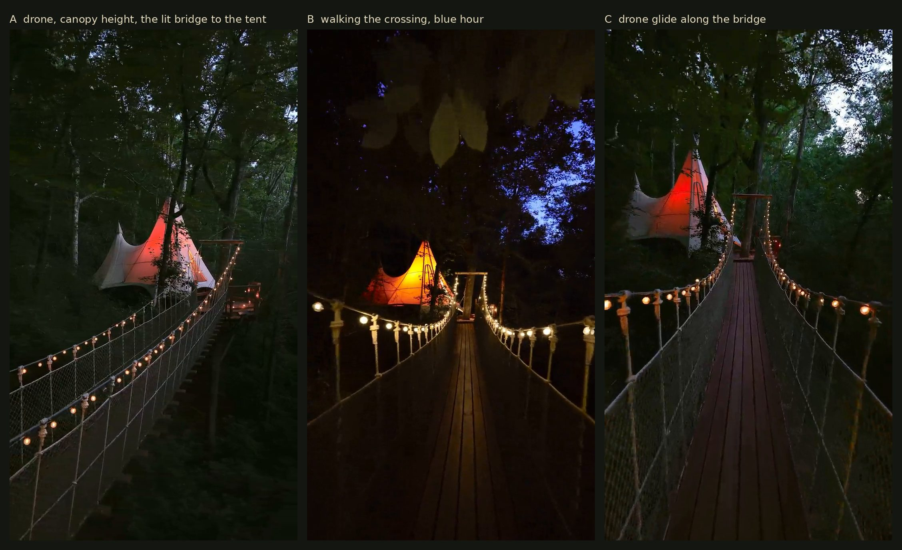
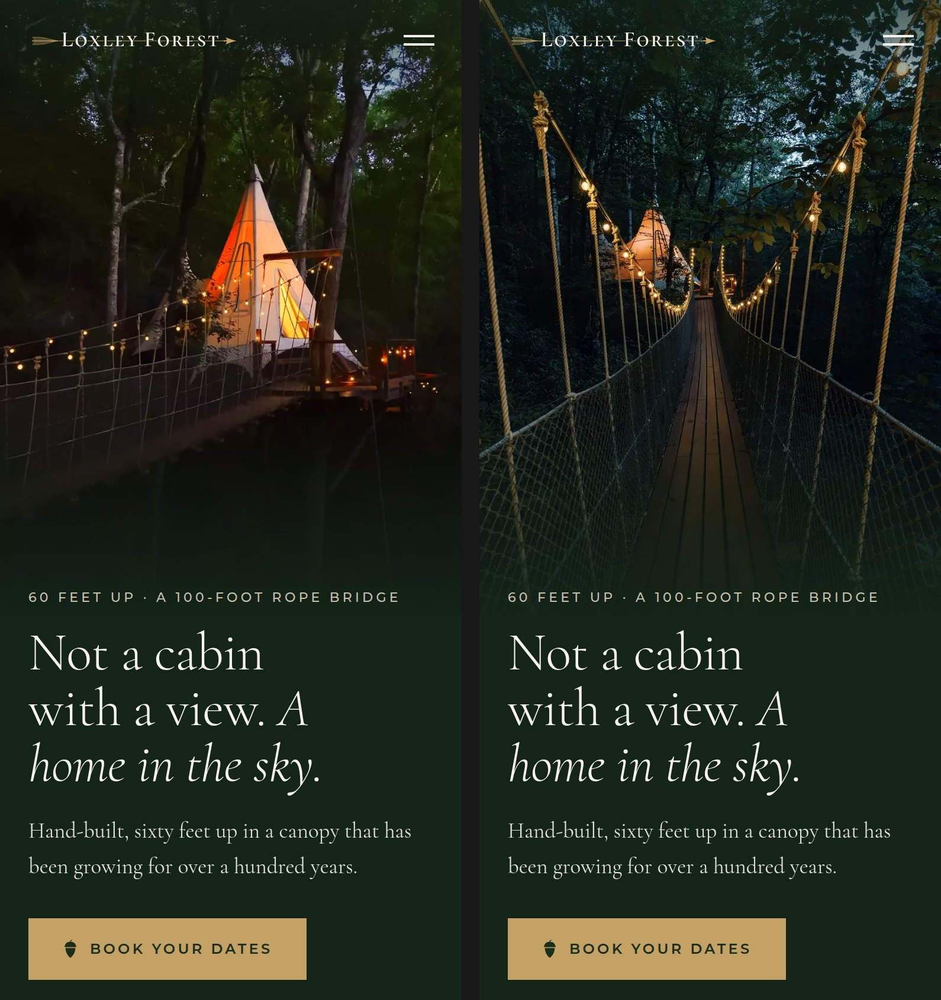

For the bridge section of the home page, in place of the drawn bridge. Each is about eight seconds, silent, and wraps without a cut. The upright one is what a phone would show; the wide one under it is the desktop. About 7 MB of video on this page, so Wi-Fi is kinder.

One frame from each, A, B and C.
From level with the treetops, the string lights along the whole span, the canvas glowing at its end.
On the bridge itself, walking toward the treehouse as the lights come on.
Low over the deck of the bridge, gliding toward the tent at dusk.
Romantic Atlanta's stills on /treehouses, live since tonight. Before on the left, after on the right: the first screen on a phone, then the whole page.

Tell the Chief the letter. The chosen loop goes into the home page behind a switch: muted, playing on its own, the poster first, and never on a phone that asks for less data.